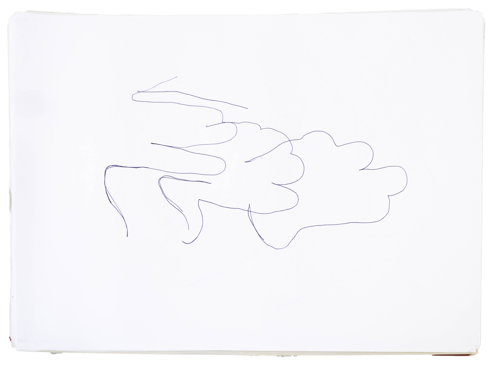
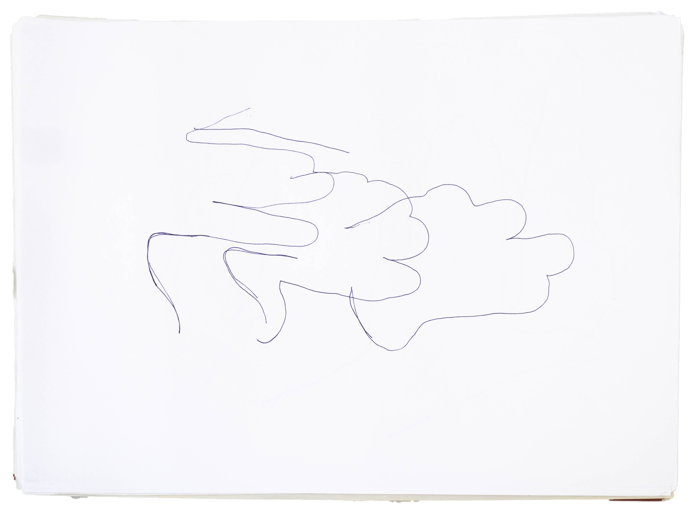

When I close my eyes and focus on my body, when I focus on my fingertips, on my nails, on the space between my fingers, when I think of my wrists, I feel the blood flowing through them. I feel my arms and I feel where my lower arm touches my upper arm. I feel where this upper arm touches my shoulder and so on. I close my eyes, but I see my body. I feel my body and I perceive the edges of it as I perceive where it touches itself. Where it touches itself, there are tension points which make the physicality of my own body apparent to me.
I urge you to do the same. Close your eyes. And feel your skin. If you feel your skin, you can trace your volume in your head. You can identify the space you occupy, and if you open your eyes, you can put it in relation to the space you don't occupy. And in this way, gather some sensibility on your self-perception and the perception that you have of the world. When doing this exercise, you are not closed to the world, you still feel the air around you. You may hear some noise outside. But your range is very limited. And when it's not limited, it's mostly imagination that the sounds or smells suggest.
To self-ingrain. Is to wear yourself like a glove. And feel its material touch you.
The skin hugs our body and makes itself appear through external objects. I exist when I have touched. If you right now go touch a wall, it is touched, but you remain feeling your skin touching the wall. The impressions that this wall leaves, give you the information that it is something outside of you that comes into contact. This contact is as a negative of a photograph is. So we perceive this object in front of us through its delineation. I speak of delineation as an outline. What separates a cup from a lagoon. These defining lines are central to our perception of the world. There would be no object as we know it otherwise, no character in the world. Form instructs our behaviour. In the same way, we don't know experience without a body.
The body delineated by itself creates a barrier which would be impenetrable if not for the senses and the ability to move. These allow the barriers to be penetrable, transformed into bridges between you and all other yous around. Our outline is the field where things touch, affect each other.
5. The line

 
